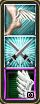

This option allows you to choose this style for the Chant window.
The style window contains Sprint and Attack buttons used to toggle sprint and attack modes on/off and shows a single chant.

Note: The style of the icons shown in the Chant window will depend on which Icon Pack spell icons are use.